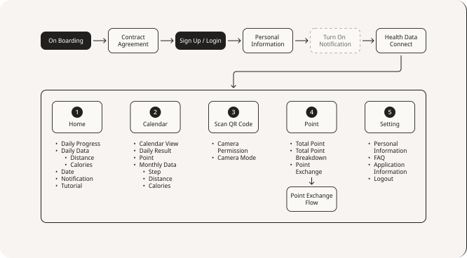
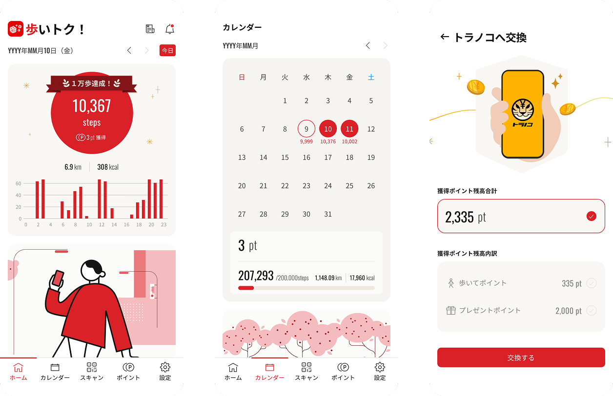
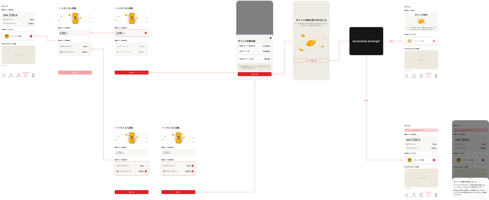
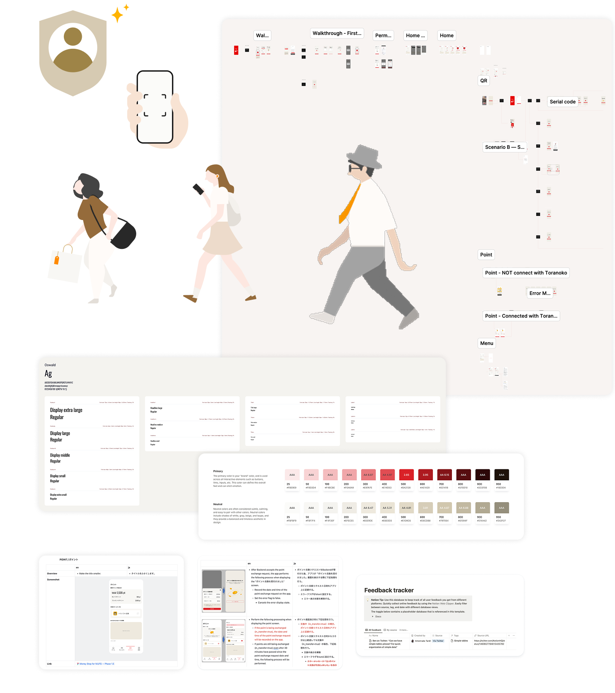

Aruitoku
Walk more. Invest more. A health-finance product that won a national award.
The situation
Fitness apps have a retention problem. By day 30, the average fitness app retains just 2.1% of users. Financial apps aren't much better at 4.5%. Both categories struggle with the same issue: users sign up with good intentions, then drift away because the daily habit never forms.
TORANOTEC saw an opportunity at the intersection. What if walking — the simplest exercise — could directly fuel your investments? What if every step you took earned points that flowed into your Toranoko portfolio? Health and wealth, linked through a single daily action.
The partner was MUFG Bank — one of Japan's largest financial institutions. The ambition was high. The product needed to feel trustworthy enough for MUFG's brand, motivating enough to keep people walking, and simple enough that converting steps to investment points felt effortless.
I was the sole designer.
The insight
The habit gap is where both categories fail
Fitness apps overwhelm users with data. Financial apps overwhelm users with complexity. Neither builds a daily habit that feels rewarding in the moment. Aruitoku needed to make the loop feel immediate: walk → see progress → earn points → invest → walk again. Every screen had to reinforce that loop, not distract from it.
MUFG's brand required a different kind of design confidence
This wasn't a startup product. Partnering with MUFG meant the design had to balance approachability with institutional trust. The interface needed to feel clean and inviting — motivating enough for daily use — while meeting the visual and compliance standards of one of Japan's most established banks.
Gamification needed restraint
The temptation with a walking app is to add badges, leaderboards, streaks, and achievements everywhere. But Aruitoku's users aren't hardcore gamers — they're everyday people who want to be a little healthier and a little wealthier. The gamification had to motivate without overwhelming. Subtle progress indicators. Clear point accumulation. The satisfaction of watching small steps compound into real investment value.
The work
Designed the product from zero
This was a ground-up build. I shaped the product vision and user strategy, then designed every screen and flow: onboarding, daily dashboard, calendar view, QR code scanning, point exchange, settings, and the critical step-to-investment conversion flow.
Users needed to understand two concepts simultaneously: this is a walking app, and your steps become investments. The onboarding had to explain both without making either feel secondary. I designed a flow that moved from health data connection (familiar territory) to investment point explanation (the new value proposition) — building confidence before asking for commitment.

Designed the daily loop
The home screen became the engine of the habit. Daily step progress displayed prominently. Distance and calories as supporting context. Points earned visible at all times. The calendar view gave users a sense of accumulated effort — not just today, but the pattern of their consistency over weeks and months.

Created the step-to-investment bridge
The point exchange flow — where walking points convert to Toranoko investment — was the most critical design challenge. It had to feel like a reward, not a transaction. I designed it as a smooth, almost celebratory moment: see your points, choose to invest, watch them move into your portfolio. Minimal friction. Maximum satisfaction.

Built the design system and handoff
Established a complete design system for the development team: color schemes aligned with MUFG's brand, typography, iconography, UI components, illustration guidelines, spacing specifications, and interaction behavior documentation. Delivered organized Figma files with interactive prototypes that demonstrated key animations and transitions. The developer feedback was clear — minimal back-and-forth because everything was well-documented.

The impact
| Metric | Aruitoku | Industry avg |
|---|---|---|
| Retention rate (day 30) | 30.1% | 2.1% (fitness) |
| Activation rate (day 30) | 15.6% | 10% (fitness) |
| Conversion to investment | 5.17% | 1–2% (finance) |
30.1% retention at day 30 — in a category where the average is 2.1%. That's not an incremental improvement. That's a fundamentally different outcome, driven by a product that gave users a reason to come back every single day.
5.17% conversion to investment services — more than double the financial app average. The bridge between walking and investing wasn't just a concept. Users crossed it.
Aruitoku received the Collaboration Award at the Japan Financial Innovation Award (JFIA) 2024 — recognized for its unique approach to merging health and financial well-being.
The lesson
The best products connect two things people already care about. Health and wealth aren't new interests — but linking them through a single daily action created a habit loop that neither category achieves alone. The design insight wasn't complexity. It was connection.
Institutional partnerships raise the design bar. Working with MUFG meant every pixel carried brand weight. The constraint made the design better — cleaner, more trustworthy, more considered.
Restraint is the hardest form of gamification. The urge to add more badges, more animations, more rewards is constant. The discipline is knowing when the simple act of watching your points grow is motivation enough.
"Every day, people open Aruitoku, check their steps, and watch their walks turn into investments. It's not complicated. It's not flashy. It's a small, daily proof that health and wealth grow the same way — one step at a time."